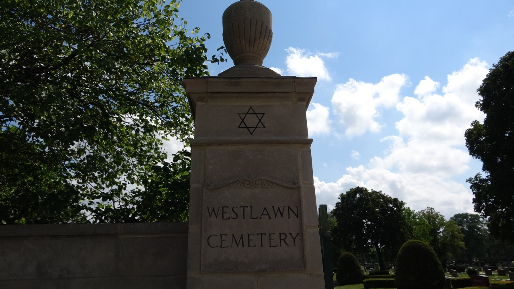

Westlawn Cemetery

Located in Norridge, Illinois, Westlawn Cemetery is a Jewish cemetery covering seventy acres. Norridge sits fifteen miles northwest of Chicago’s Loop. Leonard Chess is the only Blues related person buried here. Westlawn Cemetery’s address is 7801 West Montrose Avenue, Norridge, Illinois, 60706.